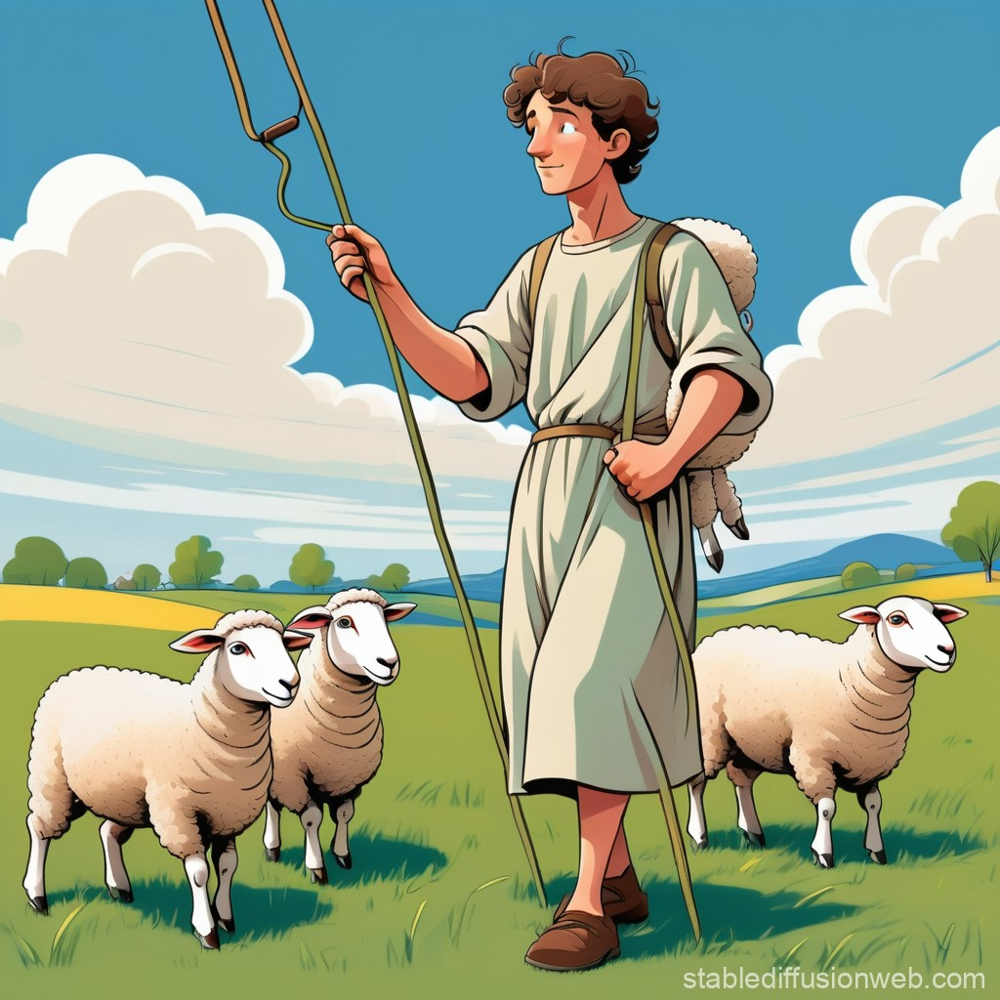
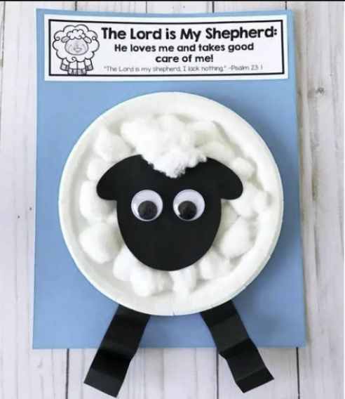

A Shepherd Boy Who Became King
Grade 6 & 7 • Bible & Life Lessons
God’s Word guides us — just as it guided David from the fields to the throne.
"The Lord is my shepherd; I shall not want. He makes me lie down in green pastures. He leads me beside still waters. He restores my soul. He leads me in paths of righteousness for his name's sake."
— Psalm 23:1–3 (ESV)
"But the Lord said to Samuel, 'Do not look on his appearance or on the height of his stature… for the Lord sees not as man sees: man looks on the outward appearance, but the Lord looks on the heart.'"
— 1 Samuel 16:7 (ESV)
"Create in me a clean heart, O God, and renew a right spirit within me."
— Psalm 51:10 (ESV)
From the quiet hills of Bethlehem to the palace in Jerusalem — David’s life shows what God can do with a heart that trusts Him.
David was the youngest of Jesse’s eight sons. While his brothers tended sheep or pursued other work, David faithfully cared for the flock in the fields. He learned to trust God completely — seeing His provision in the green pastures and His protection from lions and bears. He wrote songs of praise that became the Psalms. God doesn’t need someone impressive on the outside — He prepares those who are faithful on the inside.
When the prophet Samuel came to anoint a new king, he saw David’s older brothers — tall, strong, and commanding. But God said, "I have rejected him… for the Lord looks on the heart." He chose David — the one everyone else overlooked. God’s choice surprised everyone because He looks at character, not appearance. David was anointed — but he didn’t become king immediately. He waited, and he kept serving faithfully.
Goliath stood over nine feet tall. For forty days he mocked Israel and their God. Soldiers trembled. But David said, "You come to me with a sword and with a spear and with a javelin, but I come to you in the name of the Lord of hosts." With five smooth stones and unshakable faith, David defeated the giant. He didn’t rely on his own strength — he relied on God’s power. Small beginnings and great faith can overcome impossible obstacles.
David became a great king — but he was not perfect. He made serious mistakes that hurt others and broke God’s law. Instead of making excuses or hiding, David faced his sin. He prayed, "Create in me a clean heart." He repented sincerely, and God forgave him completely. David’s story doesn’t end with failure — it shows that God’s mercy is greater than our mistakes. True greatness means admitting when we’re wrong and turning back to God.
God kept every promise. David’s kingdom was established, and from his family line came the greatest King of all — Jesus Christ. David’s life teaches us: start where you are, serve faithfully, trust God when it’s hard, and return to Him when you stumble. He is always faithful.
Visual scenes from David’s life — explore the places and moments that shaped a king.

David cared for sheep with love — he learned leadership by serving faithfully.

We are like sheep — God guides, protects, and loves us every day.
Where David learned: God provides, God leads, God protects. Psalm 23 began here.
Sheep fear rushing water — so does our soul. God leads us to calm places to restore us.
Not strength — but faith. David chose what was simple and trusted God for the victory.
From shepherd to king — God’s promises span a lifetime and reach into eternity.
Visual storytelling brings David’s journey to life — click to watch.
Beautiful animation explaining Psalm 23 and what it means to be one of God’s sheep • 4:34
Creative stop-motion version of the full Psalm 23 — powerful and memorable • 3+ min
Explore multiple versions of the famous battle and what it teaches about faith
Express what you’ve learned — create something that reminds you of David’s heart and God’s faithfulness.
Make your own fluffy sheep — a reminder that God is our Good Shepherd.
Design a reminder of what gave David confidence — not stones, but God.
Design a poster that shows what it means to have a heart for God.
Draw or paint your own picture of what God as your Shepherd looks like.